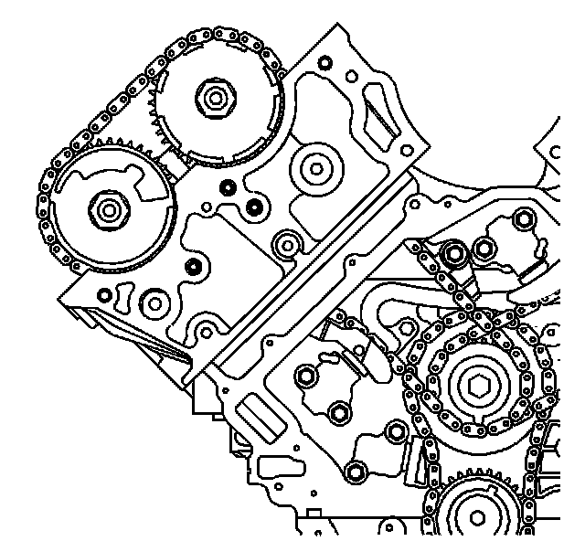
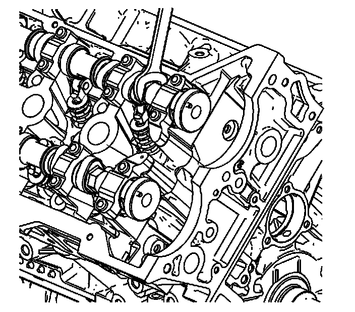
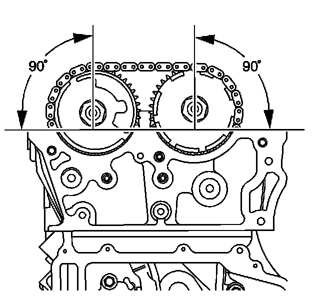
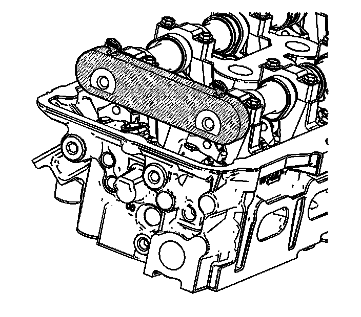
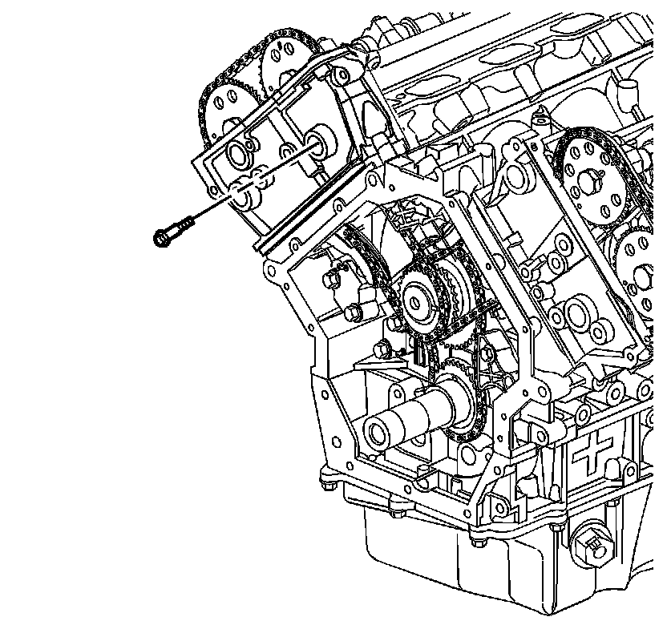

116. Secondary Camshaft Drive Chain Installation - Right Side
Secondary Camshaft Drive Chain Installation - Right Side
Tools Required
EN 46328 Camshaft Holding Tool

1. Install the right secondary camshaft drive chain guide.
2. Loosely install the lower right secondary camshaft drive chain guide bolt.

3. Install the right secondary camshaft drive chain shoe.
Notice: Refer to Fastener Notice (Fastener Notice) .
4. Install the right secondary camshaft drive chain shoe bolt.
Tighten the right secondary camshaft drive chain shoe bolt to 25 N.m (18 lb ft).

5. Install the right secondary camshaft drive chain by sliding the chain down through the right cylinder head and placing the chain on the end of the camshafts.
6. Route the right secondary camshaft drive chain around the outer row of the intermediate drive chain sprocket teeth.

7. Install the right intake and exhaust camshaft position actuators into the right secondary camshaft drive chain.

8. Install the right intake and exhaust camshafts onto the camshafts. The camshaft sprocket notch marked "RI" which indicates right intake, engages the intake camshaft pin and the camshaft sprocket notch marked "RE" which indicates right exhaust, engages the exhaust camshaft pin.

9. If necessary, use an open wrench on the hex cast near the front of each camshaft to help align the sprocket notch to the camshaft pin.
10. Loosely install the right intake and exhaust camshaft position actuator oil control valves.

11. Ensure the perpendicular alignment of the right intake and exhaust camshaft sprocket notches and camshaft pins to the cylinder head.

12. Install the EN 46328 to the right cylinder head camshafts.

13. Install the upper right secondary camshaft drive chain guide bolt.
Tighten BOTH the upper and lower right secondary camshaft drive chain guide bolts to 25 N.m (18 lb ft).

14. Collapse the right secondary camshaft drive chain tensioner using the following procedure:
1. Rotate the ratchet release lever counter-clockwise and hold.
2. Collapse the right secondary camshaft drive chain tensioner shoe and hold.
3. Release the ratchet lever and slowly release the pressure on the shoe.
15. When the ratchet lever moves to the first detent a click should be heard and felt. Insert a pin through the hole in the release lever in order to lock the right secondary camshaft drive chain tensioner shoe in the collapsed position.

Important: Ensure the right secondary camshaft drive chain tensioner release lever is facing out.
16. Install the right secondary camshaft drive chain tensioner.
17. Install the right secondary camshaft drive chain tensioner bolts.
Tighten the right secondary camshaft drive chain tensioner bolts to 25 N.m (18 lb ft).
18. Remove pin from right secondary camshaft drive chain tensioner lever.

19. Ensure the correct alignment of all secondary timing components.

20. Ensure the correct alignment of all primary timing components (1, 2).

Notice: Refer to Torque Reaction Against Timing Drive Chain Notice (Torque Reaction Against Timing Drive Chain Notice) .
21. Use an open end wrench on the hex cast into the left intake camshaft, in order to prevent the camshaft from rotating, when tightening the camshaft position actuator oil control valve on the left intake camshaft.
22. Tighten the camshaft position actuator oil control valve on the left intake camshaft.
Tighten the camshaft position actuator oil control valve to 120 N.m (89 lb ft).

23. Use an open end wrench on the hex cast into the left exhaust camshaft, in order to prevent the camshaft from rotating, when tightening the camshaft position oil actuator control valve on the left exhaust camshaft.
24. Tighten the camshaft position oil actuator control valve on the left exhaust camshaft.
Tighten the camshaft position actuator oil control valve to 120 N.m (89 lb ft).

25. Use an open end wrench on the hex cast into the right intake camshaft, in order to prevent the camshaft from rotating, when tightening the camshaft position actuator oil control valve on the right intake camshaft.
26. Tighten the camshaft position actuator oil control valve on the right intake camshaft.
Tighten the camshaft position actuator oil control valve to 120 N.m (89 lb ft).

27. Use an open end wrench on the hex cast into the right exhaust camshaft, in order to prevent the camshaft from rotating, when tightening the camshaft position actuator oil control valve on the right exhaust camshaft.
28. Tighten the camshaft position actuator oil control valve on the right exhaust camshaft.
Tighten the camshaft position actuator oil control valve to 120 N.m (89 lb ft).